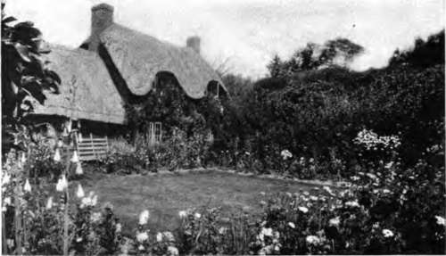

Borders For A Small Place. Continued
Description
This section is from the book "Flower Gardening", by H. S. Adams. Also available from Amazon: Flower gardening.
Borders For A Small Place. Continued
Or the front yard scheme may be extended to two rectangular borders, the remaining boundaries being as near the side limits of the home plot as seems practicable. Leave a break in the border near the house for entrance from the path. Where space is abundant and more flowers are desired, make the border a double one all around, or part way, by a continuance of the path within the grounds. Inside the rectangles have only lawn, with shrubs or small trees if there is room.
A border along the driveway is sometimes quite enough for a small place. One that comes to mind for its fitness uses up the entire space between the road and the boundary line. It is six feet wide until the road takes a turn inward; then it broadens and ends with a rounded effect. Another, that has the drawback of a brief season of bloom, is simply a four-foot strip of German irises that follows the several curves of a driveway its entire length.
Then there is the border that defines one or two edges of the lawn on the sides that are not adjacent to the house or street. This is one of the best kinds of borders, since it is not only very beautiful as a nearer background but may be made to serve the purpose of a screen. If the flowers are largely here, and the borders by the house and front path are given over to shrubs, the foliage of which is of rather more importance than the blossoms, there is an advantage not so commonly apparent as might be.
For, with all the cottage garden charm of a house framed by flowers, or a front yard well nigh filled with them, something is lost when the borders are open to the full gaze of every passerby. The cottagers do not mind; for generations they have had no privacy and, ignorant even of what it means to the more sensitive, are happy in brief intervals of morning and evening garden intimacy that their long hours permit.
While the cottager has no other choice, it is a small place indeed that does not allow a second. This is the relegation of at least some of the borders to the rear of the house, or where they will provide a walk with a semblance of seclusion—if not the thing itself. To what lengths the relegation is to be carried is a matter for every individual to decide for himself, but that the extreme need not be too far in certain circumstances is clearly enough demonstrated by small places where the house and lawn are framed only by shrubbery borders, the flower borders being largely, or quite, out of the picture as seen from the street. Not that blossoms are absent; some of the shrubs bloom and there is an interspersing of perennials and bulbs. The main note, however, is shrubbery—which is given a winter value by the employment of some evergreen shrubs and others with berries or gaily-colored twigs.
Run a border down from the back door—even when that happens to be the kitchen entrance. Make a path if none exists and extend the border to a flower garden, consisting of more borders or a parterre; or to the kitchen garden, the barn or the poultry yard. The walk thither will be the more pleasant for the border, in each case. Or run a border from the rear of the house down to the end of the lawn; then straight through the plowed ground to the farther edge of the plot, to divide the fruit garden from the vegetable garden, or all around a rectangle of vegetables—excluding corn and lima beans, unless the space is large. If there is no plowed ground the rectangle may be a grass plot for tennis—or merely for drying clothes of a Monday.
These back yard borders are all along the lines of least resistance—straight propositions. None of them offers any particular difficulty; in fact there is no easier kind of flower gardening. They may be long or short, wide or narrow, straight or curved, double or single; you consider yourself and your convenience here, not the judgment of the passerby.
Make a border that leads somewhere, a double one whenever you can do so. In the case of a very wide rectangular border that ends at a boundary line, arrive at a similar result by running a path nearly through it lengthwise. The peculiar advantages of the double border are the creation of delightful vistas and the greater enjoyment of a stroll where attention is not confined to one side.
A narrow strip of turf between a border and a path always has a refreshing look, but in the consideration of this it must be remembered that the care of it is no small item, looking through the year. The strip is not easy to mow and there are the edges to be cut, as well as the grass ends to be trimmed from time to time. Altogether it will be far less trouble to let the border come down to the walk. Even when the walk is of dirt, gravel, ground stone or ashes, it does not take much time to keep the line comparatively straight.
borders are best managed when they are a matter of gradual growth. A good way is to begin at the house and make only one, or a section of it if it is to be very long, the first year. Add the other as time goes by. Then when the borders have to be made over, assuming that they are hardy, all the work will not come in one year. Again, delay allows time, for the accumulation of experience in border-making and the propagation of stock that, perhaps, is beyond one's mean to buy in quantity. Nothing is lost and a great deal is gained by going slowly.
"For the small home grounds, the border, or series of borders, is infinitely to be preferred in any but exceptional circumstances".
Aside from shrubs, which are in a class by them-selves, perennials are the best for borders—for the simple reason that they do not have to be planted every year. Also they have a longer range of bloom that gives them an advantage over other herbaceous plants; and there is the widest variation of height, which is no small thing in the planning of effective borders. Very beautiful borders, however, are made of biennials or annuals alone—or of various bedding plants, including not only the ordinary ones that are left to die in autumn but large and choice specimens of greenhouse plants that are kept under glass in winter. There is no rule save the very primitive one of doing as you please.
What is known as a hardy border is not necessarily one composed of herbaceous perennials exclusively. These may or may not be all; perhaps there are a few shrubs and more often than not there are annuals, biennials and bedding plants scattered through. But the very pillars are herbaceous perennials.
No matter what class of plants is employed, it is a good plan never to use less than two kinds, these to be at their best at different times unless the period is a very protracted one. German iris backed by Michaelmas daisies is an example. Or, in annuals, Shirley poppies may be followed by China asters, letting an edging of sweet alyssum, which will outlive both, be regarded as the second flower. So few as three perennials will answer very well indeed if they all have good foliage. Thus the Arabis albida, German iris and hardy chrysanthemum would give three separate periods of bloom and a continuous gray foliage effect in addition.
But the greater joy is in using a larger number of perennials to provide a long succession of dominant bloom, any other plants being fillers and therefore secondary*
Continue to:
- prev: Chapter VIII. Borders For A Small Place
- Table of Contents
- next: Chapter IX. Accumulating A Garden